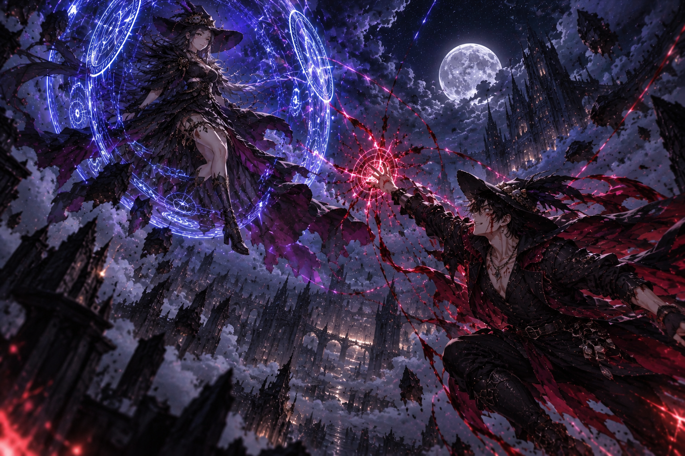

HELDRIS SALAZAR
O SOBREVIVENTE, O CARRASCO DE REIS E O HOMEM QUE DESAFIOU A NÉVOA
“Há homens que nascem para conquistar reinos. Outros, para destruí-los. Mas existem aqueles que, mesmo depois de perderem tudo, continuam caminhando, não porque acreditam na vitória, mas porque se recusam a permitir que a escuridão seja a última coisa a existir neste mundo.”
I — O MENINO QUE A GUERRA ROUBOU
Antes que seu nome fosse pronunciado com respeito pelos reis e temor pelos assassinos, antes que sua espada derrubasse um imperador imortal e antes que seus passos o conduzissem aos mistérios da Ilha da Névoa, Heldris Salazar era apenas um garoto.
Nascido nas terras orientais de Desolante, no humilde vilarejo de Noebar, Heldris conheceu uma vida simples, embora marcada pela pobreza. Ao lado de seus pais, Margaret e seu pai, e de seu irmão mais novo, Halfin, aprendeu aquilo que os grandes impérios haviam esquecido: a importância da família, da lealdade e da bondade.
O mundo, entretanto, não compartilhava dos mesmos valores.
Desolante era uma terra consumida por guerras sangrentas. Imperadores expandiam seus domínios sobre cadáveres, cidades eram reduzidas a cinzas e aldeias inteiras desapareciam sob o avanço de exércitos que não reconheciam inocentes. Em meio a essa brutalidade, Noebar parecia um pequeno refúgio, distante o bastante para que seus habitantes ainda pudessem acreditar em dias tranquilos.
Até a tarde em que essa esperança foi assassinada.
Aos quinze anos, Heldris retornava para casa com Halfin quando encontrou seu vilarejo transformado em um matadouro. Corpos cobriam as ruas. Portas haviam sido arrombadas, casas saqueadas e famílias inteiras exterminadas. O silêncio que pairava sobre Noebar era mais aterrorizante do que qualquer grito.
Heldris correu com o irmão nos ombros, desesperado para alcançar sua casa e descobrir que seus pais haviam sobrevivido.
Mas o destino não lhe concedeu essa misericórdia.
Margaret e seu marido jaziam mortos. Antes que os dois irmãos pudessem compreender a dimensão daquela tragédia, um homem surgiu atrás deles e os derrubou com golpes precisos.
Quando despertaram, estavam longe de casa, aprisionados com dezenas de outras crianças e jovens.
Seus pais haviam sido mortos por ordem do Imperador Oosama, um tirano que enviava seus assassinos para destruir povoados e recrutar os sobreviventes considerados promissores. As crianças eram submetidas a torturas, condicionamento e lavagem cerebral, até que suas identidades fossem apagadas e restasse apenas a obediência.
Heldris e Halfin deixaram de ser irmãos aos olhos de seus captores.
Tornaram-se instrumentos.
II — O SORO DA VITALIDADE E O MASSACRE DOS IRMÃOS SALAZAR
Sete anos se passaram.
O garoto que um dia conhecera o calor de um lar tornou-se um combatente de precisão aterradora. Ao lado de Halfin, Heldris destacou-se entre incontáveis aprendizes. Seus reflexos eram extraordinários, seus golpes quase impossíveis de acompanhar e sua inteligência de combate permitia que identificasse as fraquezas de um adversário antes mesmo que este percebesse estar em desvantagem.
Entretanto, por trás da disciplina imposta pelos mestres assassinos, algo permanecia adormecido.
Memórias.
Fragmentos de uma vida esquecida começaram a assombrar os sonhos dos irmãos. Rostos familiares, uma casa humilde, a voz de uma mãe e a lembrança de uma tarde que terminara em sangue. Aos poucos, Heldris recordou quem era — e compreendeu que todo o sofrimento daqueles anos não fora um acidente, mas parte de um sistema construído para transformar crianças em armas.
Quando revelou a verdade a Halfin, os dois precisaram escolher entre permanecer acorrentados à mentira ou arriscar tudo pela liberdade.
A escolha foi feita.
Na cerimônia do Hon Dai, o exame mortal que concederia aos sobreviventes o Soro da Vitalidade Ninja, os irmãos receberam a substância que ampliava drasticamente suas capacidades físicas e mentais. Esperaram enquanto seus corpos assimilavam o soro. Então, na escuridão da madrugada, vestiram seus trajes, empunharam suas katanas e iniciaram a fuga.
A princípio, tudo correu conforme o planejado. Guardas tombaram sem compreender de onde vinha o perigo. Corredores foram atravessados sem que os alarmes soassem.
Até que um mecanismo oculto denunciou sua presença.
Em instantes, centenas de assassinos cercaram a saída. Diante deles havia um exército treinado para matar; atrás deles, uma floresta mergulhada em trevas.
Heldris e Halfin escolheram a floresta.
Ali, privados da visão e cercados por inimigos que conheciam cada técnica de seus treinamentos, os irmãos transformaram a escuridão em sua aliada. Guiados pela percepção, pela furtividade e por anos de violência, enfrentaram todos aqueles que ousaram persegui-los.
Quatro horas e meia de combate se passaram.
Quando o sol começou a nascer, nenhum dos assassinos enviados à floresta permanecia em condições de detê-los.
Os irmãos Salazar haviam conquistado a liberdade, mas não o esquecimento. A lembrança de Noebar e o nome de Oosama agora ardiam dentro deles como uma promessa.
Um dia, o império cairia.
III — A QUEDA DO IMPERADOR IMORTAL
Durante mais um ano, Heldris e Halfin aperfeiçoaram suas habilidades, preparando-se para aquilo que parecia impossível: invadir o coração do império e assassinar o homem que governava havia mil anos.
Oosama não era apenas um imperador cruel. Era uma lenda viva, um guerreiro cuja experiência atravessava séculos e cuja morte jamais havia sido testemunhada. Nenhum adversário conhecido conseguira derrotá-lo.
Mas os irmãos não buscavam glória.
Buscavam o fim de uma tirania que havia destruído suas vidas e condenado incontáveis inocentes.
Quando finalmente invadiram a província de Osulina, aproveitaram a mudança dos turnos da guarda para atravessar as defesas e alcançar a sala principal. Ali encontraram o imperador sozinho, preparando tranquilamente uma bebida.
Oosama nem sequer precisou se virar para compreender quem havia chegado.
Com uma serenidade perturbadora, recebeu os dois assassinos que haviam atravessado seu domínio e reconheceu a ousadia deles. Não demonstrou medo. Talvez acreditasse que a imortalidade e mil anos de experiência fossem suficientes para impedir que aqueles homens mudassem o curso da história.
Halfin atacou primeiro.
Em uma fração de segundo, sua lâmina alcançou o pescoço do imperador. O golpe parecia inevitável, mas Oosama desviou no último instante, desembainhou a própria katana e feriu a perna do jovem guerreiro.
A luta que se seguiu durou duas horas.
Metal colidiu contra metal. O chão recebeu o sangue dos combatentes, e a sala tornou-se palco de uma batalha que nenhum dos três poderia abandonar vivo sem carregar as marcas daquele confronto.
Halfin perdeu a mão esquerda. Seu corpo ficou coberto de ferimentos, e a cada movimento perdia mais sangue. Heldris recebeu cortes profundos nas costas, nas costelas, nos braços e no peito. A lâmina de Oosama quase lhe atravessou o corpo.
Ainda assim, os irmãos continuaram lutando.
Quando um deles fraquejava, o outro avançava. Quando Oosama encontrava uma abertura, ambos trabalhavam para fechá-la. Pela primeira vez em séculos, o imperador enfrentava algo que não podia superar apenas com força ou experiência: dois homens dispostos a entregar a própria vida para acabar com ele.
E, finalmente, o impossível aconteceu.
A espada de Heldris encerrou o reinado de Oosama.
A cabeça do imperador foi separada de seu corpo, e a lenda de mil anos caiu diante dos olhos daqueles que jamais acreditaram que isso pudesse acontecer.
Quando os guardas entraram na sala, encontraram o tirano morto. O pânico tomou conta dos corredores. A notícia atravessou a província como uma tempestade: o imperador imortal havia caído.
Heldris e Halfin ergueram a prova de sua vitória diante dos habitantes de Osulina.
A era de Oosama terminara.
Soldados depuseram suas armas, assassinos abandonaram o império e o povo, acostumado a viver sob o medo, finalmente ousou comemorar. Onde antes havia submissão, surgiu esperança.
Nos anos seguintes, os irmãos ajudaram a derrubar outros tiranos e a pôr fim a antigos domínios de opressão. Por algum tempo, Heldris conheceu algo que raramente havia experimentado: a paz.
Mas a paz nunca foi feita para durar.
IV — A CARTA QUE TROUXE A NÉVOA
Depois de anos governando e combatendo ao lado do irmão, Heldris decidiu abandonar a capital e viver longe das obrigações do poder. Confiava em Halfin e acreditava que o império finalmente encontrara um caminho justo.
O tempo passou.
Halfin formou sua família, teve duas filhas e governou durante anos relativamente tranquilos. Entretanto, a quietude acabou despertando nele uma inquietação que Heldris conhecia muito bem: o desejo de partir em busca de algo maior.
Certo dia, mensageiros trouxeram notícias de uma ilha distante, coberta havia mais de um ano por uma névoa persistente. Viajantes relatavam fenômenos estranhos, mas ninguém sabia explicar o que existia por trás daquele véu.
Halfin decidiu investigar.
Heldris tentou convencê-lo a permanecer. Seu irmão agora possuía uma esposa, filhas e um reino pelo qual era responsável. Nem todo mistério precisava ser desvendado, nem toda aventura valia o preço de uma despedida.
Halfin, porém, era teimoso. Partiu mesmo assim, confiando na própria força e nas habilidades que haviam sobrevivido a tantas batalhas.
Seis meses depois, uma carta chegou às mãos de Heldris, transportada por um pássaro.
A mensagem não trazia boas notícias.
Halfin escrevera que, caso seu irmão estivesse lendo aquelas palavras, deveria considerá-lo morto. Pedia perdão por não ter escutado seus conselhos e implorava que Heldris protegesse sua esposa e suas filhas. Terminava reafirmando o quanto as amava.
Heldris leu aquelas palavras em silêncio.
O homem que enfrentara exércitos sem hesitar sentiu o peso de uma dor que nenhuma armadura poderia conter. Já havia perdido os pais, a infância e anos inteiros de sua vida. Agora, depois de tudo o que sobreviveram juntos, a possibilidade de perder Halfin novamente era insuportável.
Ele não aceitaria aquela carta como uma sentença.
Deixou a administração do reino nas mãos de pessoas de confiança, despediu-se daqueles que precisavam de sua proteção e partiu em direção à Ilha da Névoa.
Dessa vez, não marchava contra um imperador.
Marchava contra o desconhecido.
E, para Heldris Salazar, o desconhecido era apenas mais um inimigo que precisava ser enfrentado.
V — KURKUZAN E OS HERÓIS QUE DISSIPARAM A NÉVOA
A jornada conduziu Heldris até Kurkuzan, uma terra que guardava seus próprios perigos e segredos. Foi ali que seus caminhos se cruzaram com os de Castiel, um homem quieto e solitário, cuja presença revelava pouco sobre aquilo que se escondia em seu interior.
Ao lado dele estavam Aarron e Liria.
Quatro aventureiros de passados distintos, reunidos por circunstâncias que nenhum deles poderia ter previsto.
A ameaça que encontraram em Kurkuzan exigiu mais do que habilidade individual. Os gigantes da colina dominavam aquelas terras com uma força brutal, e enfrentá-los parecia uma tarefa destinada a terminar em tragédia. Porém, unidos, os aventureiros transformaram uma batalha desesperada em uma vitória memorável.
Os gigantes foram derrotados.
E, com a vitória, veio algo que Heldris não esperava encontrar tão facilmente: companheiros nos quais podia confiar.
Os feitos do grupo espalharam-se pela região, e seus integrantes passaram a ser reconhecidos como heróis que haviam dissipado a névoa que envolvia aquelas terras. Pela primeira vez em muito tempo, Heldris não precisava carregar sozinho o peso de cada decisão.
Mas suas jornadas estavam apenas começando.
VI — MARISCOLD E O ROSTO POR TRÁS DAS ILUSÕES
De Kurkuzan, o grupo seguiu para Mariscold.
A região revelou-se um novo campo de provações. Perigos se acumulavam a cada passo, e os aventureiros acabaram envolvidos em acontecimentos que ultrapassavam os conflitos comuns entre povos e reinos. Entre as ameaças que enfrentaram estava um culto demoníaco ligado a um lorde demoníaco, uma força cuja influência ameaçava consumir tudo aquilo que tocava.
Foi também em Mariscold que conheceram, pela primeira vez, o temível Kumon.
Membro da Ordem do Caos, Kumon não precisava conquistar territórios com exércitos nem esmagar seus inimigos em confrontos diretos. Sua arma era a percepção alheia. Disfarces, ilusões e manipulações permitiam-lhe conduzir aventureiros como peças sobre um tabuleiro, fazendo-os acreditar que cada decisão era inteiramente sua.
Heldris conhecia a violência. Conhecia a mentira, a traição e o funcionamento de homens que utilizavam outros seres humanos como ferramentas.
Mas Kumon era diferente.
Contra um adversário que manipulava aquilo que os olhos viam e a mente aceitava como verdade, experiência e instinto nem sempre eram suficientes. Cada rosto podia esconder outro. Cada promessa podia ser uma armadilha. E cada passo adiante podia aproximar o grupo de uma verdade cuidadosamente fabricada.
Ainda assim, os aventureiros prosseguiram.
Subiram a grande montanha de Mariscold, enfrentando os desafios que se interpunham entre eles e seu próximo objetivo. No alto daquela jornada, um novo propósito começou a tomar forma: encontrar a lendária Biblioteca de Atreus.
A busca passou a orientar seus passos.
Eles ainda não sabiam, porém, que estavam caminhando para uma das maiores armadilhas de suas vidas.
VII — A BIBLIOTECA DE ATREUS E A QUEDA DAS CERTEZAS
Depois de uma busca longa e exaustiva, Heldris e seus companheiros finalmente encontraram a biblioteca.
Ela se erguia em uma ilha distante, cercada por uma paisagem que parecia ter sido arrancada de uma lenda terrível. Dinossauros percorriam aquelas terras, enquanto um vulcão entrava em erupção e o céu era cortado pela fúria da natureza.
Foi ali que conheceram aquele que acreditaram ser Atreus.
Mas a verdade estava escondida por trás de uma máscara.
O suposto guardião da biblioteca era, na realidade, Kumon disfarçado. Mais uma vez, o manipulador havia conduzido os aventureiros exatamente para onde desejava. A revelação transformou a descoberta em uma armadilha, e o grupo foi arrastado para um confronto que não compreendia inteiramente.
No decorrer dos acontecimentos, a identidade de seu verdadeiro adversário se revelou: Jack.
A batalha que se seguiu esteve longe de ser uma vitória gloriosa. Foi uma luta de sobrevivência, marcada pela confusão, pelo perigo e pela sensação de que cada vantagem podia desaparecer a qualquer instante. Os aventureiros haviam atravessado regiões hostis, derrotado ameaças monstruosas e resistido às manipulações de seus inimigos, mas agora enfrentavam um adversário que os levara até ali por meios que mal conseguiam compreender.
O combate quase custou a vida de Heldris.
Seu passado inteiro havia sido construído sobre a capacidade de sobreviver ao impossível. Sobre erguer-se depois de cada ferimento e continuar lutando mesmo quando a derrota parecia inevitável. Contudo, nem toda batalha podia ser vencida apenas com disciplina, força ou determinação.
Naquele dia, sobreviver foi a única vitória que lhe restou.
E, enquanto a ilha ardia sob a fúria do vulcão, uma verdade ainda mais terrível veio à tona.
Zurgnar estava livre.
O selo que o mantinha aprisionado havia sido rompido, e a ameaça que agora se erguia diante do mundo ultrapassava tudo aquilo que Heldris e seus companheiros haviam enfrentado até então.
A busca pela Biblioteca de Atreus terminara. Mas, no lugar das respostas que esperavam encontrar, os aventureiros haviam testemunhado o início de uma catástrofe.
VIII — O PESO DAS TRÊS PERDAS
Depois da libertação de Zurgnar, Heldris e seus companheiros compreenderam que o mundo havia entrado em uma era perigosa. A jornada que começara como uma busca por respostas terminara diante de uma ameaça capaz de mudar o destino de todos.
Antes que seus caminhos se separassem, fizeram uma promessa: voltariam a se encontrar em dois anos. Naquele momento, Heldris ainda queria acreditar que, apesar de todas as provações, haveria um futuro em que poderia rever aqueles que haviam lutado ao seu lado.
Mas a esperança não resistiu por muito tempo às notícias que vieram depois.
Halfin estava morto.
Durante toda a vida, Heldris e seu irmão haviam enfrentado o mundo juntos. Sobreviveram ao massacre de Noebar, escaparam do treinamento dos assassinos e derrubaram um imperador que parecia imortal. Heldris partira para a Ilha da Névoa recusando-se a aceitar a perda do irmão; agora, a verdade o alcançava sem lhe oferecer uma última batalha, um reencontro ou a chance de mudar o desfecho.
Como se essa dor não bastasse, outra notícia o atingiu: Castiel e Aarron também haviam morrido.
Castiel, o homem quieto e solitário que, apesar de carregar os próprios silêncios, se tornara parte daquela jornada. Aarron, companheiro que enfrentara perigos ao lado do grupo. Ambos agora pertenciam às lembranças de Heldris, como tantos outros que o destino lhe havia arrancado.
As perdas se acumularam até que o guerreiro, acostumado a atravessar campos de batalha sem demonstrar fraqueza, se viu diante de uma solidão que nenhuma espada poderia vencer. Não era o medo da morte que o atormentava, mas a percepção de que, mesmo depois de tantas vitórias, ainda não fora capaz de proteger todos aqueles que amava.
O que significava derrotar tiranos, sobreviver a monstros e desafiar forças lendárias, se as pessoas mais importantes de sua vida continuavam escapando de suas mãos?
Heldris não encontrou resposta. Apenas carregou consigo os nomes daqueles que partiram — Halfin, Castiel e Aarron — e a sensação de que lhes devia mais do que lágrimas. Devia-lhes uma promessa: fazer com que as perdas não fossem em vão.
IX — A PROMESSA A NAIRON DESTROYER
Com Zurgnar livre e a guerra cada vez mais próxima, Heldris procurou Nairon Destroyer. Já não buscava treinamento apenas para aperfeiçoar suas habilidades ou provar que era capaz de vencer adversários poderosos. Agora, cada exercício carregava o peso dos nomes que perdera.
Diante de Nairon, Heldris tomou uma decisão que mudaria o sentido de sua jornada: tornar-se o mais forte que pudesse.
Não queria poder para governar. Não queria glória, reconhecimento ou uma nova vingança que consumisse o restante de sua vida. Queria estar preparado para proteger aqueles que ainda amava. Não suportaria assistir a outra despedida sabendo que poderia ter feito mais, nem permitiria que a impotência decidisse novamente o destino de alguém querido.
“Eu não posso trazer Halfin de volta. Não posso mudar o destino de Castiel ou Aarron. Mas posso aprender com o que perdi. Serei forte o bastante para proteger aqueles que ainda estão ao meu lado.”
Essa promessa não apagou a dor. Pelo contrário: transformou-a em uma presença constante, uma lembrança que o acompanharia a cada golpe e a cada ferimento. Heldris sabia que a força, por si só, não poderia garantir que todos sobrevivessem. Ainda assim, recusava-se a continuar sendo o homem que chegava tarde demais.
Sob a orientação de Nairon Destroyer, iniciou um novo período de treinamento. Cada movimento, cada prova e cada fracasso tornaram-se parte de uma preparação maior. Não treinava apenas para enfrentar Zurgnar; treinava para ser capaz de permanecer de pé quando aqueles que dependessem dele precisassem de proteção.
O menino de Noebar havia perdido a família. O jovem assassino havia perdido a inocência. O guerreiro que derrubou Oosama perdera o irmão e, depois, companheiros que aprendera a considerar família. Ainda assim, Heldris continuava caminhando — não porque a dor tivesse diminuído, mas porque finalmente sabia o que desejava fazer com ela.
Ele não podia salvar os mortos. Não podia desfazer o passado. Mas podia escolher o homem que seria dali em diante.
Quando a guerra chegasse, Heldris não lutaria apenas para sobreviver, nem para provar que era capaz de derrotar mais um inimigo impossível. Lutaria por aqueles que ainda podia proteger, pelos laços que ainda não haviam sido rompidos e pela promessa feita diante das ausências que carregava.
Talvez nunca se tornasse forte o bastante para impedir toda tragédia. Mas não deixaria de tentar.
Seu nome era Heldris Salazar. E, desta vez, sua força teria um propósito maior do que a vitória.
“Por Halfin, por Castiel e por Aarron. Não posso mudar o que aconteceu, mas posso decidir quem serei depois disso. Vou me tornar forte o bastante para proteger aqueles que ainda amo.”
Ele havia perdido muito. Sentia-se sozinho. Mas a história ainda não terminara — e, enquanto houvesse alguém para proteger, Heldris seguiria em frente.
MIGUEL

MIGUEL ANDUIN
## O Pilar do Espírito — Aquele que Aprendeu a Encarar o Caos
*“Há homens que se tornam fortes porque desejam conquistar o mundo. Outros, porque se recusam a permitir que o mundo lhes arranque aquilo que amam. Mas existem aqueles que, depois de perderem quase tudo, descobrem dentro de si uma força que jamais deveriam ter despertado — e passam o resto da vida tentando compreender se ela nasceu do amor ou do sofrimento.”*
---
# I. O Menino Que Carregava Dois Mundos
Antes de se tornar um Pilar, antes de despertar o Espírito e muito antes de compreender a natureza do poder que habitava seu interior, Miguel Anduin era apenas um garoto de origem humilde que tentava manter sua família inteira.
Sua vida nunca foi marcada por riquezas, prestígio ou grandes expectativas. Ele nasceu em uma família simples, distante das disputas de poder que moviam reis, feiticeiros e grandes ordens. Seu lar era modesto, seus dias eram ocupados por tarefas comuns e seu futuro parecia destinado a seguir o mesmo caminho de tantos outros jovens de sua condição.
Seu pai havia abandonado a família anos antes, deixando para trás mais perguntas do que lembranças. Miguel cresceu sem compreender completamente por que alguém seria capaz de virar as costas para aqueles que dependiam de si. Entretanto, por mais que a ausência paterna deixasse marcas, havia duas pessoas que davam sentido à sua existência: sua mãe e sua irmã mais nova.
A mãe era o alicerce daquela pequena família. Apesar das dificuldades, procurava preservar a dignidade do lar e impedir que as adversidades transformassem seus filhos em pessoas amargas. Miguel aprendeu com ela que nem sempre seria possível vencer as dificuldades, mas que isso não deveria servir de justificativa para abandonar aqueles que precisavam de ajuda.
Sua irmã, por sua vez, era a parte mais delicada daquele mundo. Desde pequena, ela não possuía os movimentos das pernas e dependia de outras pessoas para realizar atividades que muitas crianças executavam naturalmente. A condição física, porém, nunca limitou a imaginação da menina. Ela possuía uma curiosidade incansável, gostava de ouvir histórias e encontrava em Miguel alguém disposto a transformar dias comuns em pequenas aventuras.
Ele inventava narrativas sobre guerreiros lendários, criaturas antigas e heróis que desafiavam o impossível. Em algumas noites, dizia que um dia viajaria pelo mundo e descobriria lugares extraordinários para contar a ela.
Talvez fossem apenas fantasias de um garoto que pouco conhecia além de sua própria vila. Para sua irmã, contudo, aquelas histórias representavam algo muito maior: a possibilidade de que o mundo fosse mais vasto do que as limitações que ela enfrentava todos os dias.
Miguel gostava de fazê-la sorrir. Quando a menina se entristecia, ele tentava distraí-la. Quando ela perdia a esperança, ele inventava motivos para que voltasse a acreditar. E, quando alguém a tratava como se sua deficiência diminuísse seu valor, ele fazia questão de mostrar que ela jamais precisaria provar a ninguém que merecia respeito.
Ainda assim, Miguel não era capaz de protegê-la de tudo.
Na escola, sua irmã era frequentemente ridicularizada e maltratada. Algumas pessoas enxergavam nela apenas sua limitação física, ignorando sua inteligência, sua personalidade e seus sonhos. Miguel tentava intervir sempre que podia, mas era jovem, fisicamente limitado e incapaz de mudar sozinho a crueldade que existia ao redor dos dois.
Essa impotência foi uma de suas primeiras feridas.
Não porque desejasse ser reconhecido como um herói, mas porque não suportava assistir ao sofrimento de alguém que amava sem conseguir fazer com que ele terminasse.
Naquele tempo, Miguel ainda acreditava que bastava persistir, trabalhar e manter a família unida para que as coisas pudessem melhorar.
Ele não sabia que, em breve, a vida lhe ensinaria uma lição muito mais cruel.
O amor poderia dar a alguém uma razão para continuar vivendo.
Mas não oferecia garantia alguma de que o mundo permitiria essa felicidade.
---
# II. A Noite Que Destruiu Seu Lar
Miguel tinha apenas quatorze anos quando perdeu sua mãe.
A tragédia aconteceu durante uma noite fria, quando ladrões invadiram sua vila e transformaram uma noite aparentemente comum em uma sequência de violência. O que deveria ter sido mais uma lembrança simples da juventude tornou-se o acontecimento que separaria para sempre a vida de Miguel em duas partes: tudo o que existia antes daquela noite e tudo aquilo que seria obrigado a enfrentar depois dela.
Sua mãe foi assassinada durante a invasão.
Não houve tempo para despedidas dignas, palavras capazes de preparar os filhos ou explicações que tornassem a perda compreensível. Restaram apenas o choque, a ausência e a realidade brutal de que a pessoa responsável por manter a família unida jamais voltaria para casa.
Para sua irmã, a perda significou o desaparecimento da mãe que lhe oferecia segurança em um mundo frequentemente hostil. Para Miguel, significou algo ainda mais assustador: de repente, ele era o único responsável por impedir que o pouco que restava de sua família também desaparecesse.
Ele tinha quatorze anos.
Sua irmã tinha apenas nove.
A partir daquele momento, Miguel abandonou os estudos e passou a trabalhar nas plantações. Não teve a oportunidade de viver plenamente sua juventude, descobrir seus próprios interesses ou pensar no que desejava fazer quando crescesse. Cada decisão passou a ser orientada por uma pergunta simples: o que precisava fazer para que os dois continuassem vivos?
Seus dias começaram antes do amanhecer e terminavam quando as forças já não permitiam continuar trabalhando. O dinheiro que recebia era pouco, mas precisava ser suficiente para alimentar ambos, manter um teto sobre suas cabeças e garantir que sua irmã pudesse continuar estudando.
Ele aprendeu a esconder o cansaço, adiar suas próprias necessidades e guardar qualquer moeda que sobrasse.
Por vezes, provavelmente desejou que alguém aparecesse para ajudá-lo. Que um parente distante se lembrasse deles, que alguma autoridade oferecesse assistência ou que o mundo simplesmente demonstrasse um pouco da compaixão que tanto parecia exigir das pessoas.
Ninguém veio para resolver seus problemas.
Então, Miguel continuou.
Durante quatro anos, construiu sua vida em torno de uma promessa silenciosa: sua irmã teria a oportunidade de concluir os estudos que ele precisara abandonar. Ela teria um futuro. Poderia descobrir o que desejava ser, conquistar sua independência e experimentar uma vida que não fosse inteiramente determinada pela pobreza ou pela deficiência.
Quando Miguel completou dezoito anos, a menina estava prestes a concluir a escola.
Para muitos, aquilo talvez fosse apenas uma etapa comum da vida. Para ele, representava uma vitória extraordinária.
Cada jornada exaustiva nas plantações, cada refeição simples e cada desejo pessoal sacrificado haviam servido para manter aquele sonho vivo.
Miguel não possuía riquezas para lhe entregar, tampouco conhecia pessoas influentes capazes de transformar seu destino.
Mas conseguira oferecer à irmã aquilo que a vida tentara negar aos dois: uma oportunidade.
E, naquele momento, acreditou que talvez os anos de sofrimento finalmente começassem a ficar para trás.
O destino, entretanto, ainda não havia terminado de cobrar seu preço.
---
# III. O Sono Que Não Terminava
A violência voltou a alcançar sua família por meio de um acontecimento que Miguel jamais conseguiu aceitar.
Sua irmã foi brutalmente agredida na escola.
Ele já temia que algo semelhante acontecesse novamente. Conhecia a crueldade daqueles que a ridicularizavam e sabia que sua presença nem sempre seria suficiente para protegê-la. Ainda assim, precisava trabalhar. Não poderia permanecer ao lado dela durante todos os dias sem colocar em risco a sobrevivência dos dois.
A vida os havia colocado diante de uma escolha injusta: Miguel precisava se ausentar para cuidar dela, mas justamente essa ausência o impedia de estar presente quando ela mais precisava.
As lesões provocadas pela agressão foram graves. Sua irmã entrou em coma, mergulhando em um estado do qual não conseguia despertar.
De repente, o futuro pelo qual ambos haviam lutado deixou de parecer próximo.
A escola, que antes simbolizava uma oportunidade, tornou-se uma lembrança dolorosa. Os planos que Miguel imaginara para a irmã perderam sua forma diante de uma realidade que não sabia como enfrentar.
Ele procurou ajuda, mas não possuía os recursos necessários para pagar pelos curandeiros e tratamentos de que ela precisava. Seu trabalho nas plantações, que durante quatro anos havia sido suficiente para mantê-los vivos, já não parecia capaz de lhe oferecer aquilo que mais desejava.
Dessa vez, trabalhar mais talvez não resolvesse o problema.
Mesmo assim, ele trabalhou mais.
Cada moeda guardada passou a representar a possibilidade de despertar sua irmã. Miguel não sabia quanto tempo seria necessário, quanto custaria o tratamento ou se algum curandeiro conseguiria realmente ajudá-la. Agarrava-se, contudo, à ideia de que ainda existia uma solução.
Enquanto ela permanecesse viva, ele se recusava a considerar a esperança perdida.
Visitava-a, observava seu rosto e tentava imaginar o que diria quando ela finalmente abrisse os olhos. Talvez contasse sobre os lugares que ainda desejava conhecer. Talvez reclamasse dos anos em que precisara trabalhar como um adulto enquanto os outros jovens aproveitavam a própria juventude. Ou talvez simplesmente segurasse sua mão e dissesse que tudo ficaria bem.
Miguel havia construído sua vida ao redor da felicidade daquela menina.
Agora, precisava construir uma nova vida em torno da possibilidade de recuperá-la.
Seu objetivo deixou de ser apenas sobreviver.
Ele precisava acumular dinheiro suficiente para pagar um tratamento, encontrar alguém capaz de ajudá-la e trazê-la de volta à vida que havia sido interrompida de maneira tão cruel.
O garoto que inventava aventuras para fazer a irmã sorrir havia se transformado em um jovem disposto a trabalhar até não conseguir mais permanecer de pé.
E, dentro dele, começava a nascer uma forma perigosa de determinação.
Não era ambição por riqueza.
Não era desejo de reconhecimento.
Era o desespero de alguém que já havia perdido quase tudo e que se recusava a aceitar que a última pessoa que amava pudesse lhe ser arrancada em definitivo.
---
# IV. A Noite em Que o Espírito Despertou
A tragédia final chegou quando sua vila foi atacada por bandidos.
Naquela noite, o fogo consumiu casas, as chamas iluminaram as ruas e os gritos dos moradores transformaram o silêncio da região em uma verdadeira manifestação de terror.
Miguel tentou fugir.
Talvez, pela primeira vez em muitos anos, tenha pensado apenas em si mesmo. Estava exausto, carregava os efeitos de uma vida inteira de trabalho e sabia que não tinha condições de enfrentar sozinho homens armados.
Mas então se lembrou de sua irmã.
Ela continuava em casa, indefesa, presa ao sono que já havia consumido tantos meses de sua vida. Não poderia fugir. Não conseguiria se proteger. E, se as chamas alcançassem o lugar onde estava, não teria sequer a oportunidade de compreender o que acontecia.
Miguel voltou.
Não porque acreditasse que seria capaz de derrotar os invasores, mas porque a possibilidade de abandoná-la era insuportável.
Correu em direção ao fogo, ignorando os perigos, os gritos e a própria exaustão. Seu único pensamento era chegar até ela antes que fosse tarde demais.
Foi visto pelos bandidos.
Perseguido, acabou encurralado.
O que se seguiu não foi uma batalha entre guerreiros. Miguel não possuía treinamento suficiente para enfrentar um grupo de homens armados, não carregava uma arma digna de combate e não conhecia qualquer técnica capaz de compensar a diferença entre ele e seus perseguidores.
Lutou com pedras, pedaços de madeira e tudo aquilo que conseguiu encontrar.
Cada golpe era uma tentativa desesperada de continuar avançando. Cada movimento era sustentado pela mesma determinação que o mantivera trabalhando durante quatro anos para garantir o futuro da irmã.
Mas a coragem, por si só, não impedia que seu corpo fosse ferido.
O sangue começou a escorrer. A visão perdeu a nitidez. Seus movimentos tornaram-se mais lentos, enquanto os inimigos continuavam a cercá-lo.
Miguel estava prestes a cair.
E, naquele instante, alguma coisa dentro dele se rompeu.
Não foi apenas a vontade de sobreviver.
Foram anos de sofrimento acumulado. A morte da mãe. A infância abandonada. As humilhações que testemunhara. As jornadas exaustivas. O medo de perder a irmã. A impotência diante do coma. A promessa de que um dia seria capaz de ajudá-la.
Tudo aquilo que havia suportado para continuar funcionando, tudo o que enterrara para não desmoronar, irrompeu de uma só vez.
Miguel não desejava poder pelo poder.
Ele precisava de força porque, durante toda a sua vida, havia encontrado situações nas quais amar alguém não fora suficiente para protegê-lo.
Naquela noite, o Espírito respondeu.
A energia espiritual despertou em seu interior, atravessando seu corpo com uma intensidade que Miguel jamais havia experimentado. O ar pareceu estremecer. O chão rachou sob seus pés. Uma presença invisível tomou conta do ambiente, fazendo com que até as chamas parecessem recuar diante da força que havia surgido.
Miguel Anduin tornou-se um Pilar.
Não por meio de uma cerimônia, de um treinamento prolongado ou de uma escolha cuidadosamente planejada. Seu despertar aconteceu no limite entre a vida e a morte, quando sua existência inteira convergiu para um único instante de necessidade absoluta.
O poder que emergiu não conhecia disciplina.
Não possuía forma definida.
Era o Espírito em sua manifestação mais brutal: energia pura, liberada por uma vontade que já não encontrava limites dentro do corpo que a continha.
Os bandidos que haviam encurralado o jovem foram massacrados em segundos.
Oito homens morreram sem que Miguel sequer compreendesse completamente o que estava fazendo. Não houve uma sequência calculada de movimentos ou uma técnica que pudesse explicar o resultado. Houve apenas a liberação de uma força que ultrapassava tudo aquilo que ele conhecia sobre si mesmo.
Quando o silêncio retornou, Miguel permaneceu de joelhos, exausto e coberto de sangue.
Ao redor dele, o chão estava rachado. A casa havia sido profanada. O fogo ainda consumia partes da vila.
E, pela primeira vez, o jovem que passara a vida inteira tentando obter força para proteger sua família havia descoberto que era capaz de destruir tudo aquilo que estivesse diante dele.
Mas não sentiu vitória.
Não sentiu orgulho.
Sua primeira preocupação foi a irmã.
**Ela estava viva?**
Aquela pergunta deveria ter sido a única coisa importante no mundo.
Entretanto, Miguel não teve oportunidade de descobrir a resposta naquela noite.
Exausto pelo despertar do Espírito, foi capturado pelo restante dos bandidos, acorrentado e levado inconsciente.
A força que havia derrotado oito homens não fora suficiente para impedir que ele fosse arrastado para longe.
E, quando perdeu a consciência, Miguel ainda não sabia o que havia acontecido com a pessoa por quem acabara de arriscar a própria vida.
---
# V. O Prisioneiro e o Homem Que Lhe Ofereceu uma Nova Vida
Miguel despertou no dia seguinte sem compreender imediatamente onde estava.
As algemas prendiam seus pulsos e suas pernas. Seu corpo estava ferido, seus músculos mal respondiam aos movimentos e a lembrança da noite anterior voltava em fragmentos, acompanhada pelo cheiro de fumaça e pela memória das chamas.
A primeira coisa que fez foi tentar entender o que havia acontecido com sua irmã.
Estava viva?
Haviam conseguido alcançá-la?
A casa continuava de pé?
Miguel não possuía respostas. A incerteza tornou-se ainda mais dolorosa porque, depois de tantos anos lutando para mantê-la segura, ele não conseguira sequer permanecer ao lado dela no momento em que seu poder despertara.
A dor não vinha apenas dos ferimentos.
Vinha da possibilidade de que todo o sacrifício tivesse sido inútil.
Ele havia abandonado a infância, os estudos e os próprios sonhos para cuidar da irmã. Trabalhara até a exaustão para financiar sua recuperação. Enfrentara homens armados porque não suportava a ideia de deixá-la sozinha.
Agora estava acorrentado, sem recursos, sem liberdade e sem saber se ainda possuía uma família.
Seu poder era extraordinário, mas não conseguia oferecer a resposta de que mais precisava.
Miguel começou a compreender, de uma maneira dolorosa, que despertar uma força inexplicável não significava recuperar o controle sobre a própria vida.
Foi nesse estado que foi conduzido ao encontro de Socratis.
Socratis representou uma ruptura inesperada naquela sequência de perdas. Em vez de enxergar Miguel apenas como um criminoso perigoso ou um jovem responsável por um massacre, ofereceu-lhe a possibilidade de deixar para trás as correntes que o prendiam — tanto as físicas quanto aquelas que carregava dentro de si.
As algemas foram retiradas.
Para alguém que acabara de perder o controle da própria existência, aquele gesto significava mais do que liberdade imediata. Era a primeira oportunidade, depois de muito tempo, de imaginar que seu destino não precisava terminar entre as ruínas de sua vila.
Socratis não poderia apagar o que Miguel havia vivido. Não poderia devolver-lhe a infância, desfazer a tragédia ou oferecer uma resposta simples para todos os seus problemas.
Mas podia lhe dar algo que o jovem já não esperava receber.
Uma nova oportunidade.
Miguel ainda não compreendia a natureza de seu poder, não sabia controlar o Espírito e continuava consumido pela preocupação com a irmã. Mesmo assim, pela primeira vez desde o despertar, alguém lhe oferecia a possibilidade de seguir em frente em vez de simplesmente pagar pelo que havia acontecido.
Ele não estava curado.
Não estava em paz.
Mas já não estava completamente sozinho.
---
# VI. Mariscold e o Primeiro Lugar Depois da Dor
A chegada de Miguel a Mariscold representou o início de uma etapa diferente de sua vida.
Depois de anos definidos pelo trabalho, pelo medo e pela responsabilidade de manter sua irmã viva, ele se encontrava em um mundo no qual suas experiências pessoais eram apenas uma pequena parte de uma realidade muito maior.
Foi em Mariscold que conheceu Sócrates, que lhe ofereceu abrigo por um período e lhe permitiu experimentar algo que parecia ter desaparecido de sua vida: a possibilidade de permanecer em um lugar sem precisar lutar imediatamente pela própria sobrevivência.
Ainda assim, abrigo não significava tranquilidade.
Miguel carregava dentro de si as lembranças da vila destruída, a incerteza sobre a irmã e a experiência aterradora de ter liberado uma força que não compreendia. O Espírito permanecia nele, inquieto, como se aquela manifestação tivesse aberto uma porta que não poderia ser fechada simplesmente por descansar.
Ele tentava aceitar a paz que lhe era oferecida, mas algo dentro de si permanecia fora do lugar.
A casa era silenciosa demais. Os dias pareciam simples demais. A vida continuava ao redor dele, enquanto sua mente retornava repetidamente àquela noite.
Aos poucos, começaram a surgir sinais que não conseguia explicar.
Um reflexo que parecia atrasar-se por um instante. Um sussurro distante que desaparecia assim que tentava distingui-lo. Pequenas distorções que faziam o mundo parecer ligeiramente desalinhado, como se a realidade ao seu redor não estivesse inteiramente encaixada.
Depois vieram os sonhos.
Eram intensos demais para serem lembranças comuns e estranhos demais para que Miguel pudesse tratá-los como simples pesadelos. Ele despertava carregando sensações que não sabia nomear, sem compreender se aquilo estava relacionado ao poder que despertara ou a algo que existia além de seu entendimento.
O jovem que antes temia não conseguir proteger sua irmã passou a temer também aquilo que poderia se tornar.
O Espírito havia lhe concedido poder, mas não lhe entregara respostas.
E Miguel começava a perceber que sua jornada não consistiria apenas em aprender a utilizar uma força extraordinária. Precisaria descobrir o que aquela força significava, quais eram seus limites e o que estava acontecendo com ele desde a noite em que o mundo pareceu estremecer sob seus pés.
Foi nesse período que começou a encontrar pessoas que mudariam o rumo de sua história.
---
# VII. Aqueles Que Caminharam ao Seu Lado
Entre as pessoas que cruzaram o caminho de Miguel estavam Heldris, Castiel, Liria e Vod.
Eles não eram apenas novos conhecidos reunidos por circunstâncias passageiras. Tornaram-se companheiros de uma jornada que rapidamente ultrapassaria qualquer expectativa que Miguel pudesse ter formado sobre sua própria vida.
Com eles, passou a enfrentar perigos que não poderiam ser resolvidos pelo trabalho incansável de um único homem. As ameaças encontradas pelo grupo exigiam coragem, cooperação e a disposição de continuar avançando mesmo quando ninguém possuía todas as respostas.
Miguel, que passara boa parte da juventude tentando carregar sozinho a responsabilidade pela família, precisou aprender a conviver com pessoas que também possuíam objetivos, medos e feridas próprias.
A companhia dos outros não apagava sua preocupação com a irmã, tampouco resolvia o mistério de seu despertar. Mas lhe oferecia a oportunidade de descobrir algo que havia perdido desde a morte de sua mãe: a experiência de não enfrentar todas as dificuldades sozinho.
Juntos, atravessaram situações que colocaram à prova não apenas suas habilidades, mas também a capacidade de permanecerem unidos diante do desconhecido.
Entre os primeiros grandes perigos estava Mufasa, um poderoso demônio que exigiu que o grupo enfrentasse uma ameaça muito além dos desafios comuns de suas jornadas.
O confronto foi mais uma prova de que o mundo em que Miguel agora vivia era muito maior — e muito mais perigoso — do que a pequena vila onde passara sua infância.
As batalhas não eram mais apenas tentativas de escapar da morte ou preservar aquilo que restava de sua família. Cada confronto o colocava diante de forças cuja existência ultrapassava sua compreensão, obrigando-o a reconsiderar continuamente os limites do poder, da coragem e da própria sobrevivência.
Miguel começava a construir uma identidade para além do garoto que perdera tudo.
Ainda carregava a dor que o fizera despertar como Pilar, mas agora possuía companheiros, responsabilidades compartilhadas e motivos para continuar avançando mesmo quando o passado ameaçava consumi-lo.
Pela primeira vez, sua história não era sustentada exclusivamente por aquilo que havia perdido.
Também começava a ser definida por aqueles que encontrara.
---
# VIII. A Biblioteca de Atreus e as Respostas Ocultas
A jornada do grupo levou os companheiros até a Biblioteca de Atreus, um lugar associado a conhecimentos extraordinários e segredos que poderiam alterar sua compreensão do mundo.
Entretanto, chegar até aquele conhecimento não significava ter liberdade para explorá-lo.
Sob a pressão do mago Galor, os acontecimentos da biblioteca se transformaram em mais um teste para Miguel e seus companheiros. O conhecimento, naquele contexto, não era apenas uma fonte de respostas: era também algo capaz de atrair disputas, manipulações e perigos que nem todos compreendiam completamente.
Galor, cuja presença inicialmente estava ligada à pressão exercida sobre o grupo, viria a revelar-se um amigo no futuro.
Essa transformação demonstra uma das lições que Miguel precisaria aprender durante sua trajetória: as primeiras impressões nem sempre são suficientes para compreender as intenções de alguém. Em um mundo marcado por traições, interesses ocultos e poderes difíceis de interpretar, a verdade raramente se apresentava de maneira simples.
A Biblioteca de Atreus representou, assim, mais uma etapa no amadurecimento de Miguel.
Ele havia começado a vida acreditando que o mundo poderia ser dividido entre aqueles que protegiam sua família e aqueles que pretendiam machucá-la. Depois da morte de sua mãe e das tragédias que se seguiram, passou a enxergar a crueldade como uma força sempre pronta a destruir aquilo que amava.
Agora, porém, encontrava pessoas e circunstâncias que não podiam ser compreendidas apenas por essa divisão.
Alguns indivíduos que pareciam ameaças poderiam se tornar aliados. Algumas oportunidades de conhecimento poderiam esconder riscos. E algumas verdades exigiriam muito mais do que coragem para serem descobertas.
O Espírito dentro dele continuava sendo um mistério, mas Miguel começava a entender que o poder não era a única coisa que precisava desenvolver.
Também precisava aprender a julgar, questionar e compreender.
A força havia surgido de maneira involuntária.
A sabedoria precisaria ser conquistada.
---
# IX. Jack, o Tirano e o Preço do Confronto
Entre os grandes confrontos vividos por Miguel e seus companheiros, poucos tiveram consequências tão marcantes quanto a batalha contra Jack.
O encontro colocou o grupo diante de uma ameaça mortal. A violência e a gravidade daquele combate deixaram claro que suas jornadas não eram aventuras das quais todos necessariamente retornariam.
Jack morreu naquele confronto.
A morte do Tirano marcou o fim de uma ameaça, mas também representou mais um lembrete de que, naquele mundo, a sobrevivência nunca era garantida. Mesmo quando os aventureiros conseguiam prevalecer, as consequências das batalhas podiam ser definitivas.
Miguel conhecia a perda desde a infância. A morte da mãe havia destruído a estrutura de sua família; o estado da irmã havia transformado seu futuro em uma espera angustiante; e o despertar do Espírito ocorrera precisamente quando acreditava estar prestes a perder o último vínculo que lhe restava.
A morte de Jack, no entanto, acontecia em um contexto diferente.
Dessa vez, Miguel não era apenas um garoto tentando sobreviver às circunstâncias. Era parte de um grupo que enfrentava ameaças capazes de determinar o destino de muitas outras pessoas.
A derrota de um inimigo não significava que todos os perigos haviam desaparecido.
Enquanto as consequências do combate ainda se faziam sentir, Zurgnar acabou sendo libertado.
A vitória custara caro e não impediu que uma ameaça ainda maior alcançasse o mundo.
A libertação de Zurgnar representou uma mudança decisiva no curso dos acontecimentos. Aquilo que o grupo enfrentara até então já era suficientemente perigoso, mas o surgimento dessa nova realidade anunciava que os conflitos futuros não poderiam ser encarados como simples prolongamentos das batalhas anteriores.
Miguel e seus companheiros haviam sobrevivido a Mufasa, atravessado os perigos ligados à Biblioteca de Atreus e enfrentado Jack. Tinham demonstrado que eram capazes de resistir a ameaças extraordinárias.
Mesmo assim, não conseguiram impedir tudo.
Essa constatação era especialmente difícil para alguém que carregava a história de Miguel Anduin.
Desde muito jovem, ele havia associado a própria existência à obrigação de proteger aqueles que amava. Sempre que algo terrível acontecia, sua primeira reação era procurar o que poderia ter feito para impedir aquilo.
O mundo, entretanto, não oferecia controle absoluto a ninguém.
Nem mesmo a um Pilar.
E Miguel ainda teria de aprender que assumir a responsabilidade por tudo o que acontece ao seu redor não significa ser capaz de impedir todas as tragédias.
Às vezes, continuar lutando é a única escolha possível.
E, às vezes, até mesmo aqueles que sobrevivem precisam aceitar que não conseguiram salvar tudo.
---
# X. O Portão de Atreus e a Separação
Após a libertação de Zurgnar, o grupo acabou separado pelo Portão de Atreus.
A ruptura dividiu os companheiros justamente quando o futuro se tornava mais incerto. As pessoas com quem Miguel havia compartilhado perigos e batalhas já não estavam ao alcance de sua mão, e a jornada que haviam percorrido juntos cedeu lugar a caminhos distintos.
Para alguém que aprendera desde cedo a temer a perda, a separação não poderia ser algo simples.
Miguel conhecia o significado de ficar sozinho. Havia experimentado a ausência do pai, perdera a mãe e passara anos lutando para manter a irmã viva. Sua entrada naquele novo mundo não apagara essas experiências; pelo contrário, a formação de novos vínculos havia lhe dado mais pessoas pelas quais se preocupar.
A separação pelo Portão de Atreus reabriu uma ferida antiga, embora em circunstâncias diferentes.
Dessa vez, os companheiros não haviam necessariamente desaparecido para sempre. Existia a possibilidade de reencontro, mas ela dependeria de tempo, circunstâncias e da capacidade de cada um de atravessar os próprios desafios.
Miguel precisou seguir adiante sem a segurança da presença constante daqueles que haviam se tornado parte de sua vida.
Entretanto, essa separação também o levou a uma descoberta que mudaria profundamente seu destino.
Em meio aos acontecimentos que se seguiram, ele encontrou sua irmã na fortaleza das feiticeiras.
A pessoa pela qual havia sacrificado a juventude, abandonado os estudos e despertado uma força que não compreendia estava novamente diante dele.
Independentemente de quantas respostas ainda faltassem, aquele reencontro carregava um significado impossível de reduzir a uma simples coincidência.
Durante muito tempo, a irmã fora a razão de Miguel continuar trabalhando, resistindo e acreditando que o sofrimento poderia conduzir a alguma coisa melhor. Mesmo quando ela permanecera em coma, sua existência continuara determinando as escolhas que ele fazia.
Encontrá-la novamente não apagava os anos de angústia.
Mas devolvia à sua história uma parte essencial de sua origem.
Miguel já não precisava viver apenas da lembrança dela ou da possibilidade de um reencontro. Sua jornada havia voltado a cruzar o caminho da pessoa que dera sentido a tantos de seus sacrifícios.
Ainda assim, encontrá-la na fortaleza das feiticeiras não representava o fim de seus problemas.
Era o começo de um novo período de transformação.
---
# XI. Morgana e o Ano de Aprendizado
Na fortaleza das feiticeiras, Miguel passou a treinar com Morgana, uma maga que posteriormente seria reconhecida como traidora da Ordem.
Durante um ano, ele se dedicou ao aprendizado sob sua orientação.
A experiência representava uma oportunidade de compreender melhor as habilidades que carregava desde o despertar do Espírito. Pela primeira vez, seu desenvolvimento não se limitava a reagir desesperadamente às circunstâncias. Havia espaço para treinamento, disciplina e aprimoramento.
O poder que surgira durante uma noite de terror precisava tornar-se algo que Miguel pudesse compreender e utilizar de forma consciente.
Até então, seu despertar havia sido marcado pela perda de controle. Ele não escolhera as circunstâncias em que se tornara um Pilar, tampouco compreendera completamente o que acontecera quando a energia espiritual irrompera de seu corpo.
O treinamento oferecia a possibilidade de estabelecer uma relação diferente com aquela força.
Miguel precisava aprender a não depender exclusivamente do desespero para acessar seu potencial. Precisava transformar a energia que surgira de maneira involuntária em uma capacidade que pudesse desenvolver, controlar e levar consigo para os conflitos futuros.
Entretanto, o destino de Miguel não seria permanecer como discípulo de Morgana.
A revelação de sua condição de traidora da Ordem mudaria o significado daquele período e deixaria claro que o treinamento recebido não representava necessariamente o caminho definitivo que deveria seguir.
Ainda assim, um ano de aprendizado não desaparece simplesmente porque o mestre que o conduziu deixa de representar o futuro esperado.
Miguel havia passado um período importante desenvolvendo suas habilidades, e essa experiência fazia parte da construção do Pilar que se tornaria.
Mas algo diferente o aguardava.
Uma figura cuja reputação era envolta em mistério e cuja maneira de compreender o mundo parecia escapar às categorias habituais.
O nome dela era Philippa Ainde.
---
# XII. Philippa Ainde — A Feiticeira de Contradições
Philippa Ainde era uma das feiticeiras mais misteriosas da estrada, uma figura cuja verdadeira natureza parecia escapar até mesmo àqueles que acreditavam conhecer os caminhos da magia.
Sua presença na vida de Miguel representava uma mudança profunda em sua formação.
Se Morgana havia ocupado o lugar de mestra durante um ano, Philippa surgia como uma influência muito mais difícil de interpretar. Não era simplesmente uma professora que apresentaria técnicas e acompanharia o progresso de um discípulo. Sua maneira de agir parecia reunir características que, à primeira vista, não deveriam coexistir na mesma pessoa.
Philippa era impulsiva e cautelosa.
Fria e amorosa.
Capaz de transmitir distância em um momento e uma proximidade inesperada no seguinte.
Havia nela uma mistura estranha de atitudes, sentimentos e intenções que Miguel não conseguia organizar em uma explicação simples. Sua maneira de tratar o jovem parecia alternar entre exigência e acolhimento, dureza e cuidado, como se compreender suas verdadeiras motivações exigisse muito mais do que observar suas palavras.
E agora Miguel estava em suas mãos.
Sob a orientação de Philippa, ele passou a enfrentar um período difícil de treinamento, marcado pelas exigências e pelos métodos de uma feiticeira cuja natureza continuava envolta em incerteza.
Os maus bocados pelos quais passou não devem ser entendidos apenas como obstáculos físicos. Para alguém cuja vida havia sido conduzida pelo desespero de proteger outra pessoa, tornar-se discípulo de uma figura tão imprevisível também significava confrontar a própria necessidade de controle.
Miguel estava acostumado a compreender suas ações por meio de uma finalidade clara.
Trabalhava para sustentar a irmã.
Lutava porque precisava sobreviver.
Enfrentava perigos para proteger seus companheiros.
Mesmo o despertar do Espírito, apesar de sua natureza inexplicável, havia ocorrido em resposta a uma necessidade emocional que ele conseguia reconhecer.
Philippa, porém, parecia recusar explicações tão simples.
Sua alternância entre frieza e afeto tornava difícil determinar quando estava sendo rigorosa por necessidade, quando agia por impulso e quando demonstrava uma preocupação genuína que não sabia expressar de outra maneira.
Miguel precisaria aprender a conviver com essa complexidade sem depender de respostas imediatas.
Não poderia reduzir Philippa a uma mentora bondosa, porque seus métodos lhe causavam sofrimento. Tampouco poderia compreendê-la apenas como uma figura cruel, pois havia momentos em que sua atitude revelava uma dimensão mais cuidadosa e afetuosa.
Ela era uma contradição viva.
E talvez fosse justamente isso que tornava seu papel tão importante.
Miguel estava prestes a se preparar para uma ameaça que ultrapassava os limites de sua experiência. Seu treinamento não poderia se resumir ao aperfeiçoamento de um poder já conhecido. Precisaria envolver a maneira como interpretava o mundo, compreendia o perigo e reagia diante daquilo que não conseguia controlar.
Philippa Ainde era, nesse sentido, uma nova incógnita em sua vida.
Uma incógnita que ele teria de enfrentar de perto.
---
# XIII. O Pilar Diante do Caos
A jornada de Miguel nunca foi guiada pelo desejo de conquistar poder.
Ele não nasceu em uma família nobre, não cresceu cercado por mestres e não passou a infância sonhando em se tornar uma figura lendária. Sua história começou em um lar humilde, ao lado de uma mãe e de uma irmã que dependiam umas das outras para encontrar algum conforto em um mundo difícil.
O poder surgiu quando sua vida estava prestes a terminar.
E, a partir daquele instante, Miguel precisou aprender a conviver com algo que não pedira, mas que também não poderia ignorar.
Agora, enquanto treina sob a orientação de Philippa Ainde, ele começa a preparar-se para um futuro no qual suas habilidades serão colocadas à prova por ameaças de proporções muito maiores.
O caos que ameaça consumir o mundo não é apenas mais um adversário a ser derrotado. Representa uma força cuja dimensão exige compreensão, preparo e a capacidade de agir diante de algo que pode ultrapassar os limites conhecidos da magia e do poder espiritual.
Miguel sabe que precisará tornar-se mais forte.
Mas sua trajetória também o ensinou que força sem controle pode transformar uma tentativa de proteção em destruição. Na noite em que se tornou um Pilar, ele eliminou oito homens em segundos sem compreender plenamente os próprios atos. O despertar que salvou sua vida também demonstrou o perigo de liberar uma energia que não sabia dominar.
Por isso, seu treinamento possui um significado que vai além do combate.
Ele precisa aperfeiçoar suas habilidades, aprofundar sua compreensão do Espírito e descobrir como utilizar a própria força sem permitir que ela determine todas as suas escolhas.
E há outro detalhe que torna sua jornada ainda mais importante.
O mundo já conheceu alguém que compreendeu a necessidade de dominar o caos para enfrentá-lo.
Kalia.
O caminho que Miguel procura trilhar guarda um paralelo com o legado deixado por ela: não basta resistir a uma força que ameaça consumir tudo. É necessário compreendê-la, reconhecer sua natureza e aprender a enfrentá-la sem ser completamente dominado por ela.
Esse objetivo, porém, traz consigo uma pergunta que Miguel ainda precisará responder.
Até que ponto alguém pode dominar o caos sem permitir que o caos transforme aquilo que essa pessoa é?
Miguel já foi transformado pelo sofrimento.
Já perdeu parte de sua juventude.
Já conheceu a impotência de não conseguir salvar quem ama.
Já descobriu que o poder pode surgir nos momentos mais terríveis e que nem mesmo um Pilar é capaz de controlar todas as circunstâncias ao seu redor.
Agora, precisará descobrir se consegue transformar tudo o que viveu em uma força que não dependa da dor para existir.
Porque sua verdadeira vitória não será simplesmente alcançar um nível superior de poder.
Será aprender a utilizar esse poder sem perder a razão pela qual desejou ser forte em primeiro lugar.
---
# XIV. Dois Anos Até Forgarritar
Ao separar-se de seus companheiros, Miguel estabeleceu uma promessa: encontrá-los novamente em Forgarritar, dentro de dois anos.
A promessa tornou-se um marco para a nova fase de sua trajetória.
Durante muito tempo, Miguel havia vivido preso às necessidades imediatas da sobrevivência. Quando criança, precisava manter a família unida. Depois da morte da mãe, precisava trabalhar para sustentar a irmã. Quando ela entrou em coma, passou a lutar para encontrar meios de ajudá-la. E, após o despertar do Espírito, viu-se diante de uma força que não conseguia compreender.
Agora, porém, ele possuía um horizonte definido.
Dois anos.
Esse era o período que tinha diante de si para aperfeiçoar suas habilidades, amadurecer e preparar-se para os perigos que aguardavam o mundo. Forgarritar representava mais do que um lugar de reencontro: era o ponto em que os caminhos separados voltariam a se cruzar e em que Miguel precisaria demonstrar quem havia se tornado.
Ele não sabia exatamente o que encontraria quando chegasse o momento.
Seus companheiros também enfrentariam suas próprias dificuldades. O mundo continuaria mudando, e a ameaça do caos não aguardaria pacientemente até que todos estivessem preparados.
Mesmo assim, Miguel havia assumido um compromisso.
Não abandonaria a possibilidade de reencontrar aqueles que se tornaram parte de sua história.
Essa decisão também simboliza uma mudança em sua maneira de compreender os vínculos humanos. Quando criança, Miguel acreditava que precisava carregar sozinho o peso de proteger sua família. Durante os anos seguintes, aprendeu a sobreviver sem depender de ajuda constante. Ao conhecer seus companheiros, descobriu que era possível construir relações baseadas na cooperação e na confiança.
Agora, separado deles, não tratava a distância como o fim daquela ligação.
Pretendia voltar.
Pretendia reencontrá-los.
E pretendia estar mais preparado para aquilo que aguardava a todos.
Mas os dois anos diante dele não seriam um intervalo tranquilo.
Seriam um período de treinamento, provações e transformação, sob a orientação de uma feiticeira cuja verdadeira natureza ainda permanecia envolta em mistério.
Philippa Ainde teria sua influência sobre o desenvolvimento de Miguel.
O Espírito continuaria sendo a essência de seu poder.
E o caos, que ameaçava consumir o mundo, seria o grande desafio para o qual precisava se preparar.
---
# XV. O Legado de Miguel Anduin
Miguel Anduin ainda está longe de conhecer todos os limites do próprio poder.
Sua transformação em Pilar do Espírito aconteceu sem preparação, durante uma noite na qual o medo de perder a irmã se tornou maior do que sua capacidade de suportar o sofrimento. A energia que despertou naquele instante mudou sua vida para sempre, mas não solucionou os problemas que o haviam levado ao limite.
Sua história continua marcada por perguntas sem respostas.
O que existe por trás das distorções que começaram a surgir após seu despertar? Qual é a verdadeira natureza dos sonhos que o perseguem? Até onde pode chegar o poder espiritual que carrega? E o que será necessário para enfrentar o caos que ameaça o mundo?
Essas perguntas acompanham um jovem que nunca teve o luxo de viver sem responsabilidades.
Apesar de todas as provações, Miguel não começou sua jornada desejando dominar outras pessoas, conquistar territórios ou ser lembrado por gerações futuras. Seu primeiro objetivo era muito mais simples: proteger sua família.
Foi essa necessidade que o levou a abandonar a infância para trabalhar nas plantações.
Foi o desejo de salvar a irmã que o fez enfrentar o fogo.
E foi a recusa em aceitar a própria impotência que antecedeu o despertar do Espírito.
O poder que surgiu daquela noite colocou Miguel em um caminho que jamais poderia ter imaginado. Levou-o a conhecer companheiros, enfrentar demônios, desafiar ameaças extraordinárias e aproximar-se de mistérios que ultrapassavam tudo aquilo que havia conhecido em sua vila.
Entretanto, nenhuma dessas experiências apagou completamente o menino que inventava histórias para fazer a irmã sorrir.
Ele continua sendo alguém moldado pela perda, pela responsabilidade e pelo desejo de impedir que outros sofram aquilo que ele próprio conheceu.
Essa é sua maior força.
E talvez também seja sua maior vulnerabilidade.
Porque alguém que passou a vida tentando proteger os outros pode acabar acreditando que precisa carregar sozinho o sofrimento do mundo. Pode confundir responsabilidade com culpa, poder com obrigação e sacrifício com a única forma possível de demonstrar amor.
Miguel ainda precisará descobrir que não pode salvar todos, controlar todas as circunstâncias ou impedir toda tragédia.
O desafio que o aguarda não será apenas superar os inimigos que aparecerem em seu caminho.
Será compreender o homem que deseja se tornar.
Ele treinará para aperfeiçoar suas habilidades. Aprenderá com Philippa Ainde, enfrentará as próprias limitações e buscará dominar o caos que ameaça consumir o mundo. Em Forgarritar, espera reencontrar aqueles com quem compartilhou parte de sua jornada.
E, quando esse momento chegar, Miguel não será mais apenas o jovem que sobreviveu ao massacre de sua vila.
Será um Pilar que enfrentou o desespero, conheceu a força e começou a compreender a responsabilidade que acompanha o poder.
**Miguel Anduin, o Pilar do Espírito.**
O garoto que desejou ser forte o suficiente para salvar a própria família.
O jovem que descobriu, da maneira mais cruel, que o poder nem sempre chega acompanhado de respostas.
E o homem que agora se prepara para enfrentar o caos sem permitir que ele determine aquilo em que se transformará.
**Sua jornada está longe de terminar.**
E, dentro de dois anos, em Forgarritar, o mundo poderá conhecer a pessoa que Miguel Anduin escolheu se tornar.